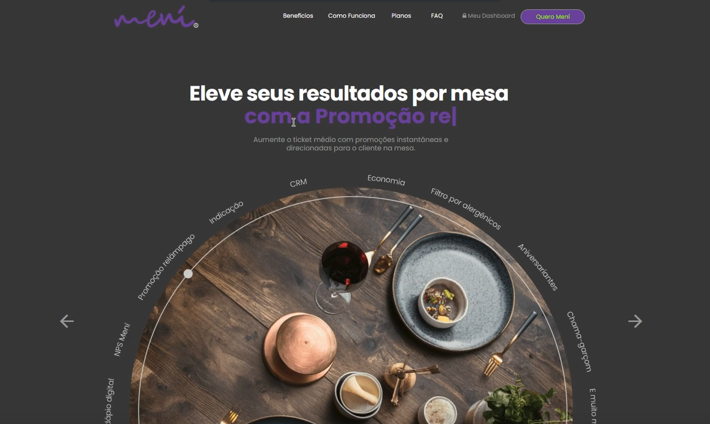
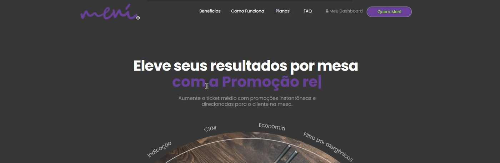
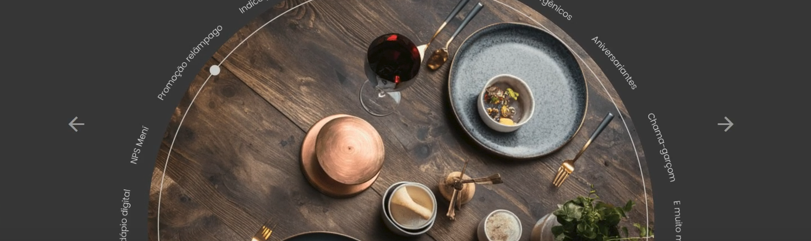

Case Study / Co-founded Product
Meni Digital
A digital platform helping food establishments improve customer service, table turnover, and marketing operations.
No longer live — the product is currently offline. The screenshots below are from when it was active.
Overview
Meni Digital was built to help food establishments serve customers more efficiently while creating better opportunities for marketing and repeat engagement.
What I worked on
- Developed product workflows with Bubble.io.
- Used JavaScript and API integrations to extend the platform.
- Worked across UI implementation and database structure.
Technology
Bubble.ioJavaScriptAPI integrationsDatabase design
Delivery
The product connected customer-facing service with operational data, giving establishments a more unified digital foundation.
Meni Digital is no longer live.
Screenshots
Product screens from the live experience.



Explore more workView all case studies →